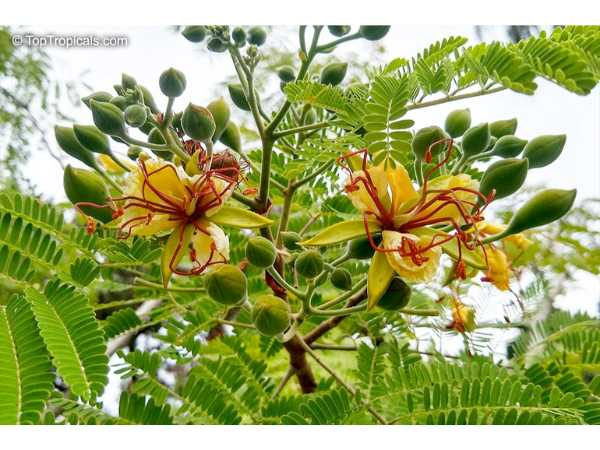

Caesalpinia pulcherrima
Common Names: Peacock Flower, Pride of Barbados, Dwarf Poinciana
Local Name: மயில் கொன்றை / வாதநாராயணன் (Tamil), Gulmohar Lata (Hindi)
Family: Fabaceae
Origin: Tropical Americas; naturalized in tropics
Plant Type: Perennial shrub/small tree
Average Lifespan: Perennial; long-lived in tropical climates
| Growth Habit | Erect, branching shrub or small tree with spiny stems |
| Plant Size | 2–4 meters tall |
| Leaves | Bipinnate, feathery; bright green leaflets |
| Flowers | Showy orange-red or yellow; in terminal racemes; long red stamens |
| Root System | Deep taproot; drought-resistant once established |
| Climate | Tropical to subtropical; tolerates heat and drought |
| Temperature Range | 20–40°C |
| Soil Type | Well-drained sandy or loamy soil; tolerates poor soils |
| Soil pH Preference | 6.0–7.5 |
| Sun Requirement | Full sun |
| Water Requirement | Low; drought-tolerant once established |
| Can it Grow in Pots? | Yes, when young; needs large container as it matures |
| Fertilizer Schedule | Occasional compost; minimal fertilizer needed |
| Common Pests | Generally pest-resistant; occasional aphids or caterpillars |
| Propagation by Seeds | Seeds germinate well after scarification; soak overnight before sowing |
| Propagation by Cuttings | Semi-hardwood cuttings can be rooted with rooting hormone |
| Water Usage | Low; highly drought-tolerant once established |
| Biodiversity Benefits | Attracts sunbirds, butterflies, and bees; excellent ornamental and wildlife plant |
| Anti-inflammatory Properties | Bark and leaves used in traditional medicine for fever and malaria |
| Digestive Health | Used for menstrual disorders and as an emmenagogue in traditional practice |
| Immune Support | Leaf decoction used for respiratory conditions and skin diseases in folk medicine |
Disclaimer: Information provided is for educational purposes only and not a substitute for medical advice.
Add your field observations here.